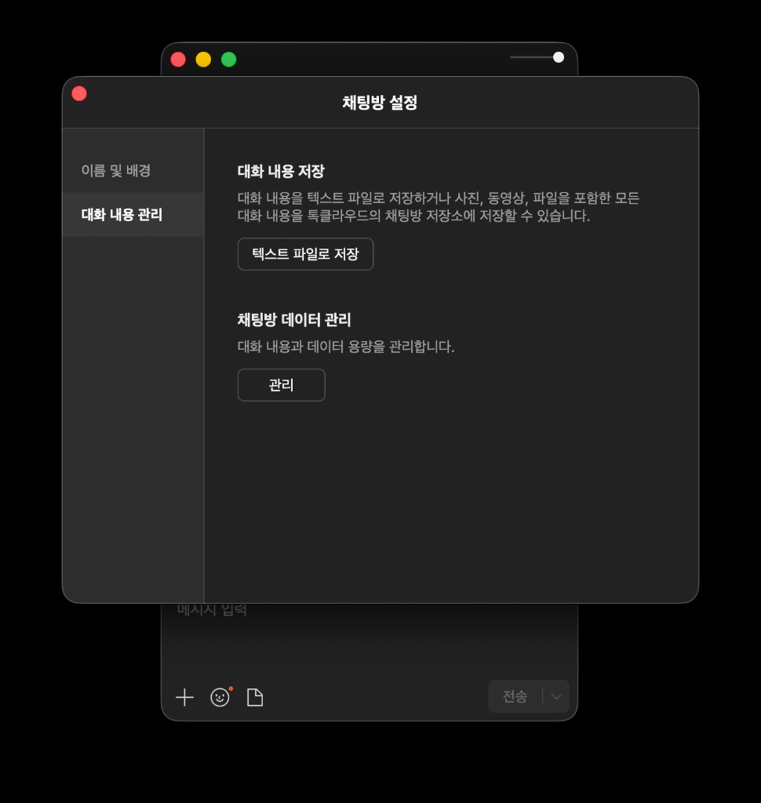

방의 얼굴을 카드로
아키타입 배너, 시즌 에피소드, 참여자 캐릭터 카드. 메시지 본문은 LLM에 보내지 않고 집계·키워드만 사용합니다.
채팅방에서 CSV 보내기만 하면, Wrapped·LLM Story Deck·차트·키워드가 담긴 공유 링크를 받을 수 있습니다. 대화 원문은 리포트에 넣지 않습니다.
가장 쉬운 방법 — 경로 생략 (최신 CSV 자동)
npx kcachat@latest
내 PC에만 저장
npx kcachat@latest --local
터미널에 나온 공유 URL을 브라우저에서 열면 됩니다. 최초 1회는 한국어 분석 모델 다운로드로 1~3분 걸릴 수 있습니다.
아키타입 배너, 시즌 에피소드, 참여자 캐릭터 카드. 메시지 본문은 LLM에 보내지 않고 집계·키워드만 사용합니다.
총 메시지·참여자를 크게 보여 주고 핵심 8칸만 노출. 나머지 지표는 접어서 스크롤을 줄였습니다.
HTML에 대화 원문을 넣지 않습니다. provenance에서 생성 버전과 LLM 사용 여부를 확인할 수 있습니다.
미리보기
집계·통계만 담긴 HTML입니다. ⓪ Wrapped부터 Story Deck·① 숫자·④ 차트까지 실제 UI 캡처입니다. 썸네일을 누르면 크게 볼 수 있어요.

경로를 적지 않아도, 아래 폴더에서 KakaoTalk로 시작하는 CSV를 찾습니다.
| OS | 기본 폴더 |
|---|---|
| Windows | 문서\카카오톡 받은 파일 |
| Mac | 다운로드 (Downloads) |
npx kcachat@latest latest --list로 목록을 보고, --pick 1처럼 순서를 지정할 수 있습니다.
npx kcachat@latest "C:\경로\KakaoTalk_Chat_....csv"처럼 경로를 넣어도 됩니다.
--local을 붙이면 내 PC 폴더에 index.html만 만들고, 인터넷에 올리지 않습니다.
이름은 마스킹되지만 통계·키워드는 방 분위기가 드러날 수 있습니다. 링크를 보내기 전에 한 번 훑어 보세요.
npx kcachat@latest --preset quality --local로 한국어·서사·Story Deck 품질을 높일 수 있습니다. RAM이 부족하면 speed를 쓰세요.
free RAM이 부족하면 Story Deck·서사를 건너뜁니다. 규칙 기반 ② 방 이야기는 남습니다. KCA_LLM=0로 끄거나 메모리 확보 후 재실행하세요.